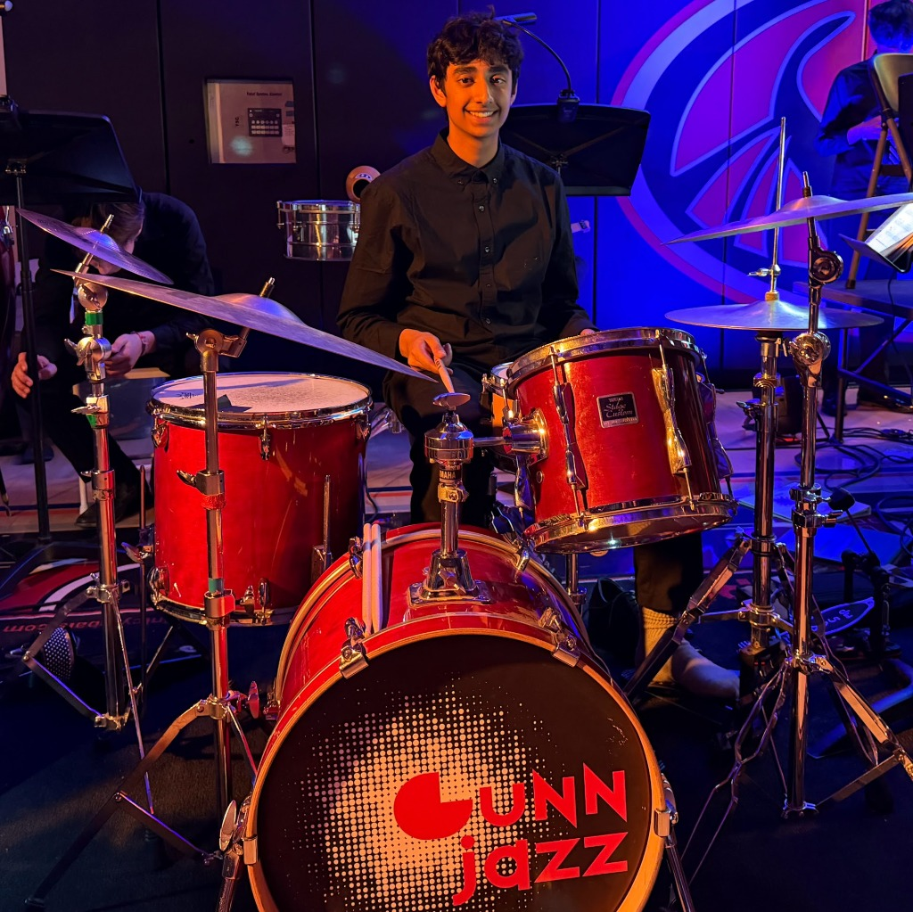

Manu
Drums
Manu plays drums.
Manu is a 10th grader at Henry M. Gunn High School. He has been playing drums since he was eight years old. He started by learning rock and played only rock for about two years. Eventually, his drum teacher pushed him to learn jazz, as it was good for technique, and he eventually came to like jazz so much that he barely plays anything else. Manu plays drums for his school jazz band and also plays percussion for his school concert band.
